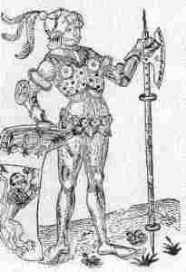
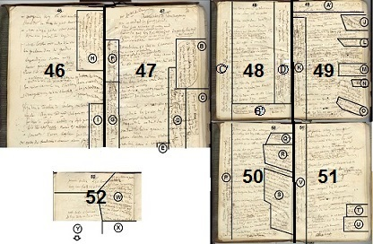
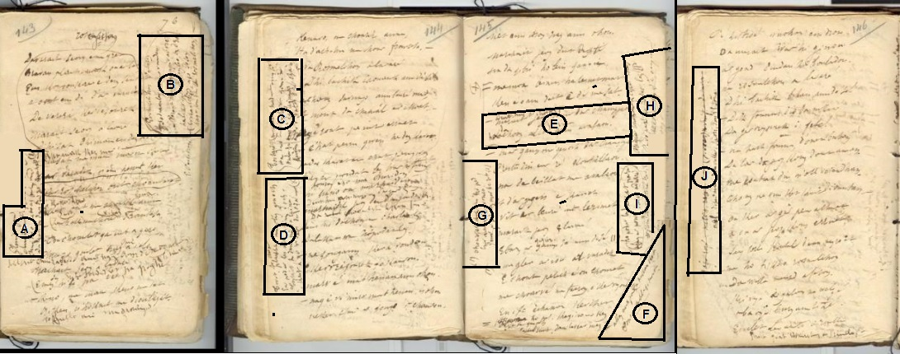

Filhorez an Aotrou Gwesklen

Ton
|
I
1G. An heol a bar, an deiz a darz, Glizh a luc'h war spern-gwenn ar c'harz. 2G. Garz uhel Traongov ar ger vraz, Elec'h zo Saozon o ren c'hoazh. 3G. Glizh a luc'h war vleuñ ar spernenn; An heol, pa wel, a guzh e benn. (*) 4G. Glizh an neñv ned eo ket, avat: Ned eo ken nemet glizh ar gwad 5G. Gwad glan skuilhet gant Rojerson , Gwasañ mab saoz a zo en traoñ. II 6J. - Marc'haridig, va merc'hig koant, C'hwi zo buan, ha c'hwi zo drant, 7J. C'hwi savo warc'hoazh beure-mat, Da gas laezh d'an dud zo' varrat. 8J. - Va mammig mat, ma am c'haret, D'ar varradeg n'am c'haset ket, 9T. N'am c'haset ket d'ar varradeg: C'hwi lakay an dud da zroug-pre'ek. 10J. Lakaet da vont va c'hoar henañ, Pe va c'hoar vihan Fransezañ; 11J. Va mammig mat, ha me ho ped ! Gant Rojerson em on spiet. 12J. - Bezit spiet gant neb a garo, C'hwi zo pedet: c'hwi a yelo; 13J. Sevel a reot kent hag an deiz An aotrou vo en e wele.- III 14J. Mac'haridig a lavare D'he zad ha d'he mamm, er beure 15J. En he fodad laezh pa groge, Mac'haridig a lavare: 16J. - Kenavo, mamm, kenavo, tad, N'ho kwelo mui va daoulagad; 17J. Kenavo deoc'h va c'hoar henañ, Ha deoc'h va c'hoarig Fransezañ.- 18T. Hogen, pa oa ar plac'hig mat O vont d'ar park e-biou ar c'hoad 19T. Mistr ha mibin ha diarc'hen Gant he fodad laezh war he fenn; 20T. Rojerson , ouzh tour ar c'hastell, Hi gwelas o tont eus a-bell: 21T. - Dihun, va floc'h, ha sav timat, Ma yemp-ni da hersal ur c'had; 22T. Da hersal ur c'hadig penn-gwenn Gant ur podad laezh war he fenn.- IV 23T. Pa ae ar plac'h e-biou an doz Oa an aotrou ouzh he gortoz. 24T. Ouzh he gortoz e-tal ar pont, Ken a lammas hi gant ar spont, 25T. Gant ar spont p'he deus hen gwelet, Hag he fodad laezh oa skuilhet. 26T. Ar plac'hig paour, dal' ma welas Da ouelañ druz en em lakaas 27J. - Tevet, ma c'hoar, na ouelet ket, Ur podad all a vo kavet; 28J. Tostait, ha deomp-ni da leinañ, Keit ha ma vezor d'he aozañ. 29T. - Aotrou kaer, ho trugarekat, Leinet am eus, ha leinet mat. |
30J. - Na deuit-hu neuze d'ar jardin,
Deuit-hu da gutuilh louzoù-fin 31J. Deuit da gutuilh ur garlantez, Da lakaat war ho podad laezh. 32J. - Na zougan ket a vokedoù, Evit ar bloaz am eus kanvoù. 33G. - Deuit-hu neuze d'al liorzhoù, Deuit da zebriñ sivi ruz-glaou. 34G. - Da zebriñ sivi na in ket; Dindan an delioù zo naered. 35. Me glev ar you er varradeg; Hi a lavar on lezirek. 36K. Hi a c'houl pelec'h on chomet Gant va fodadig laezh kaoulet. 37J. - Bremaik, c'hwi a yelo 'maez Pa vo pare ho podad laezh. 38. Mac'haridig, 'maer war e lerc'h Deomp-ni da welet d'al laezh-lec'h.- 39. Tre 'barzh ar c'hastell pa int aet, Ar plac'hig he deus dridalet. 40. Ar plac'hig paour ker gwenn hag erc'h Pa frammas an nor war he lerc'h 41G. - Va c'haredig, na spontet ket, Me na rin deoc'h-hu gaou ebet. 42G. - Ma na gofiet ket ober gaou, Perag a zeuit-hu da cheñch liv ? 43G. - Mar da cheñch liv eo a ean, Gant riv ar beure eo a ran. 44G. - Gant ar riv, aotrou, ned eo ket, Gant ar gwall-youl eo a c'hlazet. 45. - Sarret ho peg, plac'hig diot ! Deuit er frouezh-kel da zibab lod.- 46T. Tre 'barzh ar frouezh-kel pa int eet, Un aval he deus dibabet 47J. - Aotrou Rojerson , me ho ped, Ur gontell din-me a refet; 48T. Ur gontell a refet din-me Evit rac'hañ ma avalenn 49T. - Mard eo ur gontell a c'houlet, It d'ar gegin hag e kefet, 50T. War an daol zerv eo lakaet Vit ar beure 'mañ blerimet.- 51J. Mac'haridig a lavare D'ar c'heginour kozh, pa ae tre: 52J. - Plijet ganeoc'h, keginour kaezh; D'am lakaat kuit, d'am lakaat 'maez ! 53J. - Allas ! ma merc'h, ne c'hallan ket, Pont ar c'hastell a zo savet ! 54. - Ma c'houfe ar penn-grec'h-leon Emaon dalc'het gant Rojerson 55. Ma c'houfe va zad-paeron mat, Hen lakafe da redeg gwad.- V 56T. Ha Rojerson a c'houlenne Gant he floc'h, ur pennad goude: 57T. - Pelec'h e chom Marc'harit 'ta, Pa na zeu ket en-dro amañ ? 58. - Er gegin e oa, n'eus ket pell, En he dornig gwenn ur gontell; |
59. Hag hi a gomze evel-se:
"Petra rin, Jezus, ma Doue ? 60. Ma Doue, din-me leveret, Pe am lazhin, pe na rin ket ? 61. En abeg deoc'h, Gwerc'hez Vari. Me a varvo gwerc'hez, hep si" 62T. 'Mañ-hi bremañ war he genou, Gwad dindani a bouladoù; 63T. Ar gontell vras en he c'halon, Hag o c'hervel he zad-paeron: 64T. - An aotrou Gwesklen , va faeron, Hennezh a dialo evidon !- 65T. - Va floc'hig mat, na lavar ger; Deus d'he drailhañ din 'n ur paner 66T. Ha me yelo d'he c'has d'ar stêr, Warc'hoazh da gan an alc'houeder.- 67T. En distro dimeus an dour-red, He zad-paeron en deus kavet, 68T. Kavet 'neus an aotrou Gwesklen , Hag eñ ker glas evel trechon 69T. - Rojerson , din-me leveret, Gant ho paner pelec'h oc'h bet? 70T. - Bet on bet tu-mañ trem 'ar stêr, Da veuiñ un nebeut kizhier 71T. - Ned eo ket da veuiñ kizhier, Emañ ar gwad deus ho paner ! 72T. Aotrou ar Saoz, din leveret, Mac'haridig 'peus ket gwelet ? 73T. - Mac'harid n'am eus ket gwelet Abaoe pardon sant Servet. 74T.- Gaou a leverez, treitour, Rag t'ec'h eus hi lazhet neizheur ! 75T. Dizonor d'an noblañs a rez, Kerkoulz ha d'ar varc'hegiezh .- 76T. Rojerson , pa 'n deus hen klevet, E gleze en deus diwennet 77T.- Bremaik e weli, 'michañs, Mar ran dizonor d'an noblañs; 78T. Bremaik, gwaz, e weli aes Mar 'maon kuit a varc'hegiezh. 79T. Hore ! hore ! kuit a druez ! En em ward-te ! mar 'maout dibres ! 80T. - Dibres on bet, ha dibrez on Da c'hoari gant tud a galon; 81T. C'hoari a rin hag em eus graet, Na ran gant lazherien merc'hed; 82T. E pelec'h-bennak m' ho c'havan, Evel kon holl ho dispennan .- 83T. Kerkent evel m'en deus laret, E gleze bras 'neus gorroet; 84T. Ha war benn ar Saoz en deus skoet, Ha daou hanter outañ 'n deus graet. VI 85T. Rojerson a zo bet lazhet: Kastell Traoñgof zo dismantret; 86T. Dismantret eo kêr ar mac'her; Da reiñ d'ar Saozon evit skouer; 87T. Da reiñ evit skouer d'ar Saozon, Evit keloù mat d'ar Breton ! |
En bleu, passages sans équivalents dans le carnet 2/ In blue, passages without equivalents in copybook 2.
|
(*) Dans les “Jacobite Reliques” de James Hogg, tome II(1821) on rencontre les mêmes images:
il s’agit de “Callum O’ Glenn", N° 78, strophe 2: 2. Le ciel s'embrase de l'incendie de nos fermes. Le soleil du matin sombre sous la fumée. La lune hier a mis à sa carrière un terme Pour essuyer son front empourpré de rosée. Car dans tout Lochaber une rosée sanglante Scintille sur les murs, s'écoule des abris. Mon altière patrie n'est que ruines fumantes. Mort! Pour Malcolm du Glen, un linceul, je te prie! |
(*) Hogg’s “Jacobite Reliques”,2nd Series (1821) have a song with similar images:
“Callum O’ Glenn", N° 78, stanza 2: 2. The homes of my kinsmen are blazing to heaven, The bright sun of morning has blushed at the view The moon hath stood still on the verge of the even, To wipe from her pale cheek the tint of the dew. For the dew it lies red on the vales of Lochaber, It sparkles the cot and it flows in the pen ; The pride of my country is fallen for ever, O death, hath thou no shift for Callum O'Glen? |
Extraits du 2ème carnet de collecte de La Villemarqué
Encarts ci-après: En bleu, passages utilisés en priorité dans le Barzhaz. En rouge, passages ignorésBelow boxes: In blue: first choice of passages borrowed for the Barzhaz. In red left out passages.
[Version K:] Rosmelchen ha Glizh-arc'hantChanté par Katell de Tregourezp. 47 7. - C’hwi 'zavo warc’hoazh mintin mad, Mont da gas laehz d’ar varradad. Da gas laezh d'an dud zo 'varrat. 11. - D’ar varradeg me n'ez in ket: Rosmelchen zo' klask me kaouet, 12. - C'hwi a yelo d'ar varradeg 36.-2 Gant ur podad a laezh kaoulet. 13. Chwi a zavo ( sevel a rit ) kent hag an deiz Pa vo an aotrou ‘n e wele. 15. En he fodad laezh pa 'groge: 16. - Keno va mamm, keno va zad! Biken n'ho gwelo v' daoulagad! 20. An aotrou Roger Melchen lavare D’e baj bihan un deiz a oe: D'e vevel bras d'an noz-se: 21. - Me a zavo warc’hoazh mintin mad, Da vont da chaseal ar c'had, 21. Ni zavomp warc'hoazh beure Ma z'eomp hon daou da chase. 22. Da chaseal ar c'had penn-gwenn Ur podad laezh zo war he fenn. 28. - Marc'haridig ( Glizh-arc'hant ) na deuit en ti, Ha deuit-c'hwi da leinañ ganin-me! . 29. - Aotrou (Rogier) Melchen , mar am c'hredit Va lein ganin a zo debret. p. 48 29. Ma lein ganin zo debret mat E ti va mam, e ti va zad Biken welint, va daoulagad. 30. - Marc'haridig deuit er jardin Da choaz ur bouked louzoù fin! 31. P'a-hend-all c'hwi choazo ur garlantez Da lakaat war ho podad laezh. 32. - Aotrou Melchen , mar am c'hredit ' Meus ket afer ouzh boukedoù: Kervazelioù 'zougen kañvoù. 64. Ozhac'h Kervazelioù va faeron, An aotrou Gwesklenv , va faeron, a. Hennezh a denno va ranson.- = 68. Oa ket he c’her peurlavaret, Ozhac'h Kervazelioù zo degouezhet, Ken glaz evel triñchin pilet. 72.-2 Marc'haridig 'deus goulennet. Oa ket e c'her peurlavaret E c'hleze n'e c'halon 'doa plantet. = b. Setu o-daou war ar vazh-kañv! Doue bardono d’an anaon! [Ajouts 1ère PARTIE (Version G]B [En marge à droite verticalement. Les 5 premiers vers sont entourés.] 3.-1 War spern-gwenn ar garzh... c. E-barzh ar c'hastell Pestivien Zo tri diaoul barzh an ifern yen. Tri diaoul hag o zri Zaozon Hag unan anezhe Rosmelchon . .___ C [En marge à droite. Les 2 vers suivants sont entourés.] 3.-2 Glizh gwad luc'h eno tro war dro Aliez war ar menezioù. .___ D [En marge à droite, verticalement.] 1. An heol a bar, an deiz a darzh Ar glizh gwad war spern-gwen ar c'harzh (x) .___ E [En bas, en marge, à droite] d. (x) Glizh-arc'hant kaer na zeuo mui War al lann na war an irvi! 4. Glizh ( an neñv ) beure n'eo ket avat, Ned eo ken nemet ( glizh dru ), glizh gwad! .___ F [Verticalement, à gauche, colonne 1] 5.-1 - Glizh gwad skuilhet gant Aotrou Melson Hag a zo mestr war ar Zaozon! .___ G [Verticalement, à gauche, colonne 2] 2.-1 Garzh ar c'hastell Pestivien Lec'h zo Saozon en ur vandenn; 2.-2 E-lec'h a zo Saozon o ren . (c'hoazh) .___ p. 46 H [en marge à droite, verticalement, en haut] Rosmelchen 41.-1 - Peus ket da gavout sponted! Plac'h yaouank, na ouelit ket! 41.-2 Me na rey deoc'h-c'hwi gaou ebet. Perag 'maoc’h 'kas bouch din atav? 42. - Mar n'ho-peus d'ober gaou, Perag a zeut c'hwi da cheñch liv? .___ I [en marge à droite, verticalement, en bas] 43. - Mar zeu me da cheñch liv, Ema hepken gant ar riou. 44. - Gant ar riou, Aotrou mad, n' eo ket, Gant ar gwall youl ( ne laran ket ) eo e grenit. .___ p. 49 A' [ Ecrit dans l'ordre 2, 1, avec une accolade: ] 1. 1 An heol a bar, an deiz a darzh 2 G[ou]lizh gwad war bleuñv gwenn ( spern-gwenn ) ar garzh ( haie, jardin ). .___ p. 48 B' [ En bas de page, entouré ] e. Glizh gwad a-hed an erv ( irvi ) Glizh-arc'hant a zo marv ( na ruzio mui ) .___ C' [ En marge à gauche, verticalement ] 33. - Deuit-c'hwi ganin d'al liorzhoù! Deuit da gutuilh sivi ruz-glaou! . 34. - Da gutuilh sivi n'ez in ket: Dindan an dellioù zo naered! - .___ D' [ En marge verticalement à droite. ] 32. - N'on ket plac'h ar vouchoueroù, Na kennebeut plac'h ar garlantezoù E Kervezin . zo kañvoù. f. - Mar zo kañv e Kervezinioù , N'eo ket c'hwi 'n hini hen dougo. - Bugale 'r breur, bugale 'r c'hoar, C'hwi oar, Aotrou, pegen nes-kar! - ( proche parent ) .___ [ SUITE COLONNE 3 ] |
[Version T:] Zo savet da Janig Troadeg,( Marc'harid kaez ) , (Glizh-arc'hant , merc'h An Troadeg )7. Zo savet da Janig ( Varc'haid ) Troadeg Da Janig ur zon ema graet. 'Vont ur mintin d'ar varradeg: 8. - Va zad, va mamm ig ( va mammiig kaezh ) mar am c'harit, D'ar varradeg, n'am c'hasit ket! 9. D'ar varradeg, n'am c'hasit ket! Da lakaat an dud da zroukpre[z]eg. 11. Rag an aotrou etc. Rosmelchen zo 'klask me kaouet. 13. - C'hwi a zavo kent ag an deiz Pa vo an Aotrou 'n e wele 12. D'ar varradeg c'hwi a yelo Droukprezego neb a garo. 12. C'hwi zo goulennet c'hwi a yelo, Biou Rosmelchen c’hwi dremeno. - 23. Paz ae Janed biou (ar fos/ preriz/) an dosenn Oa an aotrou c’hwek e galon 23. Pa oa aet Janedig (d'ar porzh) 'N aotrou Rosmelchen oa o c'hortoz. 24. Oa o c'hortoz e-tal ar pont Ken a lamas hi gant ar spont: g. Oa o c'hortoz o c’hoari gailh Ken a reas hon-hont ur sailh: 27. - Diskennit, Janig , deuit en ti, 28.-1 Ni eomp hon-daou da zijuniñ. Rojer Melson , (anv saoz) 29. - Aotrou Melchen , ho trugarekaan, Va lein ganin a zo debret mat E ti va mam ha ti va zad. ... er jardin, 32. - Aotrou Melchen , ma eskuzit, Bokedoù me ne zougan ket. 32. Me ne zougan ket bokedoù Rag er bloaz-mañ em-eus kañvioù: h. Maro zo din un eontr pe zaou. ... i. - Kerkent ha ma vo er porzh-lec'h Te 'zerro an nor war he lerc'h. - p. 50 45. - Diskenn Jan , d'eus ar c’hambroù Da choazañ lod d'eus an avaloù. j. - Aotrou Melchen , va eskuzit, Avalou me ne 'zebran ket - 'Oa ket he ger peurlavaret, War an inkane oa taolet, Ha da vro all e oa kaset, 'Ha maez ar vro e oa kaset. ... k. – Aotrou ( Rojer ) Melchen , mar em c’hredit Ur gontell-lazh din a refec'h. - Va gontell-lazh deoc'h ne rin ket, Va gontell aouret laran ket. - E gontell dezhi en-deus roet. Kreiz he c'halon deus-hi plantet. 56. 'N aotrou Melchen a c’houlene ( lavare ) Gant he paj bihan an deiz a oe: 57. Pelec'h ma c'hoazh ( Jan ) Troadeg ? 62. - 'Ma-hi du-se war an treuzoù, Ar gwad 'tiver e poulladoù. 63. Mañ-hi du-se tal ( tal ) war al leur zi Ar gontell beteg hanter enni . - l. - Kerzh da lar't d'he gozh dont amañ, Lavar dezhan, pajik bihan Me gonto an holl goll dezhañ Ha c’hoazh ne vin ket kuit dioutañ. p. 51 65. - Pajig bihan, ne lavar ger! Deut d’he tailhañ din n’ur paner, 66. Ha me a yelo d’he c’has d’ar ster, 67. En distro dimeus ( ac'hanon ) an dour-red He zad paeron ( eñ a gavas ) en-deus degouet. 68. Ken degouezhas Aotrou Gwesklin Hag eñ ken glas evel triñchin. 69. - Aotrou Melchon , din lavarit: Gant ho paner p'lec’h oc'h-c'hwi bet? 70. - Bez on bet du-mañ trem' ar ster - (E zorn dezhañ en-deus hejet) O veuziñ un nebeut kizher. 71. - N'eo ket bet da veuziñ kizhier Ema ar gwad d'eus ho paner! 72. - Aotrou Melchen , din lavarit, Janig Troadeg ( Glizh-arc'hant ) peus ket gwelet? 73. - Janig Troadeg ( Glizh-arc'hant ) n'am-eus ket gwelet Abaoe deiz ar varradeg. – m. - Janig Troadeg a vo rentet Pa Rosmelchen vo dibennet, Rosmelchen ( Rojerson ) a vo dibennet Hag e pajig a vo krouget! p. 52 Janig Troadeg a zo bet kavet Hag he fas a oa dibennet! -  ***** |
p. 49 J [ En marge à droite , à l'envers. ] 9.-2 - Da lakaat an dud da zroukprezeg! Tavit, plac'hig, na ouelit ket: n. Eus gwassañ ( spern ) drez vez kaerrañ bouket ( tennet! ) .___ K [ En marge à gauche, verticalement ] 35.-1 Me glev an dud ar varradeg, 36.-1 Youal, chourikal, pelec'h on chomet. 25. Hag gant ar spont ( gwall spontet ) he-deus hi bet. Ken a skuilha maez gant ar spont Hag he fodad laezh 'deus skuillet. 26. Ar plac'hig paour dalc'h ma eñ welas Da ouelañ druz en em lakaas. X .___ L [ En marge droite, face à "Droug prezego..."] ] 18. Ha pa oa ( nep a wele ) Glizh-arc'hant O vonet d'ar park he-unan, 19. Mistrig, mibin, ken kaer, ken koant, 'Vont d ar varradek diarc'hen He fodad laezh klok war he fenn... .___ M [ Les deux vers suivant sont entourés. ] o. Nep he welje, sur, a leñvje, Nemet Rozmelchon na re. .___ N [ En marge droite, plus bas] ] 20. Roz-ar-Melchen 'toull e brenestr He welas o tont deus-a-bell. 21. - Sav alese, va faotrig, sav timat, Maz eomp-ni da herzel ar c'had, 22. Da herzel ar c'hadig penn-gwenn, Gand ur podad laezh war he fenn! .___ O [ En marge droite, encore plus bas] ] d". Kerkent ha ma vo er porzh-kloz, Te 'serro 'n nor hep ober trouz. - .___ p. 50 P [ En marge à gauche verticalement. ] (X) [REMARQUE:] Kervarziou-tal-Kastellne , maner koz, hanter lev eus-a Gastellne 63. Ur gontell wer (*) en he galon, [ wer= vert, green ] Hag o c'houlenn he zad-paeron: . 64. - An Aotrou Gwesklen va faeron, Hennezh a dialo evidon. - .___ Q [ En marge à droite ] 48. - Ganin zo ur berenn gwallet ( kignet ), Ma vo rac'het e vo debret. .___ R [ En marge à droite, plus bas ] 48. - C'hwi a roy din, mar am c'harit Ho k[ont]illi alaouret Da rac'hañ va berenn gwallet. = 49.-2 - Ait d'ar gegin hag e c'havfet 50.-2 Un[an] diwezhañ blerumet. 50.-1 War an daol derv int bet lakaet. - .___ S [ En marge à droite, encore plus bas ] Pa zistroaz Melchen endro, Oa ar plac'hig war he genoù, He gwad dindani e poulladoù. q. - Kerzh da laret d'he zud dont amañ. Ha me roy de(zh)e va holl dañvez Ha c'hoazh ne vin ket kuit gante. 68. - Me wel erru Kervizinet Hag eñ glas vel triñchin pilet. r. Me wel Kerivizet o [v]onet Hag eñ vel ur c'hi diboellet. - Ha me da zeskañ Rosmelchon Da gwallañ merc'hed a-feson! - = s. - Aotrou Glesken , hastit, hastit! Ho filhorez a vo gwallet. - .___ p. 51 T [ En marge à droite au niveau de “abaoe deiz ar varradeg”. ] 74.-1 - Rosmelchen , ur gaou a larit: (Glouisargant) [=Glizh-arc'hant] / Janig Troadeg ho-peus lazhet! .___ U [ Les deux vers suivants sont entourés. ] t. - Glizh-arc'hant n'am-eus [ket] lazhet: Hi he-unan he-devez graet …- .___ V [ En marge à gauche verticalement, col. 1 ] 63. An hanter e oa [anzavet(?)] Sellit Aotrou pegen eskar... .___ V' [ En marge à gauche verticalement, col. 2 ] 48. Prestit din-me ho kountellaoù, Da grenañ treid va avalaoù. 46. Barzh ar gambr pa eñ erruet, Un aval ruz en-deus choazet. 63. 'r gontell n'he c'halon 'n-eus skoet, .___ p. 52 W [En marge à droite, en face des deux derniers vers.] 74. - 0 Rosmelchen , ur gaou a larez: 75. Dizenor d'an noblans a rez, Dizenor d'ar marc'hegezh. - = 76. Rosmelchon , pa en-deus klevet He c'hleze noaz deus dic'houinet. 77. - Bremaig te a welo, aes-me-chans, Mar ran dizenor ( ziaez ) d'an noblañs… 79.-2 En em wardit, mar d'oc'h dibres..!- .___ X [En marge à droite, plus bas.] 80. - Dibres awalc'h emaon bet hag on ( Dibres on bet ha dibres on ) Da c'hoari gant dud a galon. 81. C'hoari a rin hag am-eus graet. Na rin gant lazherien merc'hed. 82. E-lec'h bennak ma o gavan, Evel chas klañv, o zispennan. - 83. Oa ket he c'her peur-echuet, E bouezer en-deus gorroet: 84.-1 War benn Rosmelchen ema kouezhet... 85.-1 Rosmelchen zo daou-hanteret, Glizh-arc'hant a zo vijet. .___ Y [En bas de page] 85.-2 Hag e gastell zo dismantret. Gant Gwesklen hag e soudarded. 86.-1 Dismantret eo ti Rosmelchon . 86.-2 Da reiñ evit skouer d'ar Zaozon ! |
Rosmelchen
(variante)
|
_____________
B [ En marge à droite verticalement .] w. Er c’hastell braz Pestivien A zo diaouled, en ur vandenn, Ne ran nemet gwashaat ar vro, Ha lakaat spont seizh lev, a-dro. E Pestivien ( Er c’hastell-se ), a zo Saozon Hag e-penn gante Rosmelchon ; _____________ P. 144 17. – Kenavo, ma c'hoarig Ana , Ha d’eoc'h-c'hwi, ma c'hoar Franseza ...- ===== 56. Na Rosmelchon a lavare D’e bajig yaouank an deiz-se: 21. – Warc’hoazh, saveomp d'ar beure mad Vit mont da chaseal er c’hoad; - 22. Barzh-er c'hoad pa 'z int erruet Ur c’had penn-gwenn o-deus kavet: 22. O-deus kavet ur c’had penn-gwenn Hag ur podad laezh war he fenn. 41. - Honnezh a zo ma c’hariadenn Hi anv zo Marc'haïdenn , 30. – Deut-c'hwi d'an-neuze d’ar jardin, Marc'haïdig Jorj , deut d’am jardin &… Da ( zibab ) choaz ur boked louzoù fin! 31. Deut-c'hwi da choaz ur c’harlantez Da lakaat war ho podat laezh! - 32. - Ne zougan ket a vou[ke]doù E Kervrezoureg zo kañvoù. Marv e map hennañ d'an Aotrou. x. - Na ve marv map hennañ ‘n Aotrou N'eo ket c’hwi a zougo ‘r c’hañvoù, Met an Itron hag an Aotrou. _____________ C [ En marge à gauche, ces quatre vers entre accolade ] 28. - Tostait va c’hoar, ha deut en ti Ha deut-c'hwi da leinañ ganin! 28. Ha deut-c'hwi ganin da leinañ, Keit a vo 'r vatez d‘hen aozañ! _____________ D [ En marge à gauche en bas verticalement. ] 27. – Tavit, va c’hoar ( plac’hig ), mar plij ganeoc’h, : Ur podad laezh-all a rin deoc’h. 28. Tostait, ha deomp-ni da leinañ Keit a vo ‘r vatez da aozañ =(x) _____________ P. 145 28. Marc'haid Jorj deut-c'hwi d'an ti Na da zebriñ ho lein ganin. - E [ Une accolade relie les quatre vers suivants ] (x) 29. - M'am-boa leinet ha leinet mat Ken a oan deuet eus di va zad. - -.------ 45. - Deuit er c’hortoz ( Marc'haïd Jorj ), d’ar c’hambroù Da choaz ul lod a avaloù! ---------------------------- 47. - Mar 'z ean-me ganeoc’h d’ar c hambroù, 48. Prestit din ur re kontelloù. Na da beliat va avaloù! |
49. -2 – Ait d’ar gegin, duhont e kavfet.
50. -2 Vit ar beure int bet lemmet. – 51. Marc'haid Jorj a lavare E-barzh ar gambr-se ( gegin ) an deiz-se (1) 35.-1 – Me glev ar you ar varradeg 36.-2 Vit gouzout pelec’h on chommet. 55.-1 Mar c'hoarve va faeron e Kervezoureg Eñ afe ac’hanon kerc’het 52. Ha me ho ped, ( Plijefe ganeoc’h ) keginour kaezh, [D'am] lakaat kuit, d'am lakaat 'maez.. - _____________ F [ Dans le coin inférieur droit, en diagonale ] 53. – Allas, merc’h paour, ne hallan ket, Pont ar c’hastell l a zo savet. – _____________ G [ En marge à gauche verticalement, en bas ] 52. (1) – Aotrou Rojer , ha me ho ped, Lezit ac‘hanon da vonet. Gant ar podad laezh ma pareet (1) _____________ H [ En marge à droite verticalement, entouré ] 37. Bremañ touchant a yefec'h maez, Pa vo pare ho podad laezh. (H) 45. Na deut c'hwi er c’hortoz d’a [ bourmen ] .. _____________ I [ En marge à droite verticalement. ] 53. - Ho podad laezh n'eo ket pare Hag ar pont savet adarre . 41. Glizh-arc'hant a grene tre . Rojer Melchon dezhi a lare : 41. - Va merc’hig koant na spontit ket Me ne rey deoc'h-chwi drouk ebet. _____________ p. 146 62. Pa zistroe ’n Aotrou endro Oa Marc'haïd war he genoù. Gwad dindani, e poulladoù. y. Na Rosmelchon a lavare D’e bajik bihan an deiz-se : - Dibr fonnus din da inkane Da Gervrezoureg kit fete. Na hast fonnus, da vont buhan Da lared da Jorj kozh dont aman. Me kontrat din va holl voien dezhan, C’hoazh ne vin ket kuit dioutan. – z. Oa ket ar ger peurechuet, A oa ar Jorj kozh erruet, Seizh taol kontell dezhan n'eus roet, - - Me ho zesko, o Rosmelchon , Da wallañ merc’hed a-feson. – Kriz vije ‘r galon na ouelje Nep a vije barzh an ti-se, O weled leur an ti o ruilhañ Gant gwad Rosmelchon e skuilhe. _____________ J [ En marge à gauche verticalement ] roj. Rojer – felc’h, rate – son, (p.soav) p.suif de savon a mel. Dépendance, de la vallée [maillon], saon (son) la sone. .___ |

|
Un déchiffrement difficile
Ci-dessus, le texte du Barzhaz (encadré N°1) est suivi de trois extraits du deuxième carnet de Keransquer publiés en novembre 2018: pages 47-52 (encadré N°2), page 101 et pages 143-146 (encadré N°3). Des photos de ces pages, sauf la page 101 qui n'en comporte pas, portent des repères relatifs aux notes et ajouts. Les strophes des carnets sont transcrites en KLT et précédées des n° de strophe qui leur correspondent dans le Barzhaz, lorsqu'il en existe. Le texte en italique correspond à ce qui semble être sur les photos des ajouts ultérieurs dans une autre teinte (crayon?) que le texte principal (encre?). Les noms des protagonistes et ainsi que les mots "anglais" et "pont(-levis)" , importants pour l'analyse, sont en caractères gras. Dans l'encart 1 (texte du Barzhaz), les n° de strophes sont suivis d'une lettre, K, T, G et J pour indiquer celle des 4 versions du carnet dont elles semblent principalement tirées. Celles sans correspondantes sont imprimées en bleu. Dans les encarts 2 et 3 (carnet) la couleur rouge indique les passages non utilisés dans le Barzhaz, repérés de a à z. Une traduction française est donnée ci-après. Parmi les passages ayant un correspondant dans le Barzhaz, portant le n° de la strophe comme on l'a dit, celui imprimé en bleu est celui qui s'en rapproche le plus . Les remarques supplémentaires sont entre crochets []. Les quatre versions Depuis la publication des carnets de Keransquer N°2 et 3, on sait que le carnet 2 contient au moins quatre versions de ce chant notées pages 46 à 52, 101 et 143 à 146. Si l'on se réfère au prénom de la chanteuse, puis au nom de l'héroïne dans chacune d'elles, les titres en sont: - Version K, chantée par Katel, pp. 47 et 48; - Version T, héroïne Jeannette Le Troadec, pp. 49 à 52; - Version G, Marc'haridig Glouizargant (Rosée-d'Argent), p. 101; - Version J, Marc'harid Jorj (Marguerite Georges), pp. 143 à 146; Une strophe notée en marge, page 50, "Ur gontell wer en he galon" (Un couteau vert dans le coeur) et une autre en bas de la page 145, "Prestit din ur re kontelloù" (Prêtez-moi une paire de couteaux) évoquent la version, publiée par Luzel dans ses "Gwerzioù Breizh Izel" en 1868 sous le titre de "Rozmelchon" , dans laquelle on présente à la malheureuse jeune fille trois couteaux de couleurs différentes. Cette version désigne son protecteur par le vocable "Kervezennek Leon" , Kervézennec le Lion comme dans le Barzhaz (mais non dans le carnet) à la strophe 54: "Mar ouife ar penn-grev-leon..." (si l'homme à la tignasse de lion savait cela). Version K: Marguerite, Kervazelioù, Rosmelchen Dans le texte principal, pp. 47-48, l'héroïne s'appelle Marc'harid(ig),(fr. Marguerite), le parrain qui la venge Kervazelioù et le traître Rosmelchen (titre, str. 11) puis Melchen (str. 20, 29, 31). Le 2ème nom de l'héroïne "Glouizargant" (KLT "Glizharc'hant", fr. "Rosée d'argent") semble être ajouté après coup. L'hésitation est permise pour le titre "Rosmelchen & Glouizargant". Ces 3 mots sont écrits avec la même encre, mais "& Glouizargant" apparaît décentré par rapport au texte principal. On peut raisonnablement supposer que le chant ( interprêté par Katel de Trégourez (à l'ouest de Leuhan, entre Laz et Coray), comme cela ressort d'une indication postérieure qui chevauche en partie le titre) s'intitulait tout d'abord "Rosmelchen". Comme il est de règle dans la gwerz, l'histoire est localisée en un lieu connu des auditeurs, en l'occurrence, comme le note en breton La Villemarqué, page 50: "Kervarziou est un vieux manoir à une demi-lieue de Châteauneuf-du-Faou". Le prénom "Roger" qui précède "Melchen" à la strophe 20 (p. 47), puis sous la forme "Rogier" à la strophe 29 a sans doute été rajouté après coup à des vers qui comme tous les autres devraient être des octosyllabes. A l'évidence La Villemarqué pensait à Roger David ou Davy , capitaine angevin du parti de Monfort et époux de Jeanne de Rostrenen qui s'empara du château de Pestivien vers 1653 et y séjourna en 1363. En 1369, le château fut repris et démoli par Duguesclin avec 6000 hommes et aidé de la milice de Guingamp. Il fut restitué la même année à son légitime possesseur, Bivien de Pestivien (Dom Lobineau, "Histoire de la Bretagne" Tome II, 1707). De même, le nom "Gwesklenv" (Duguesclin), strophe 64 (p. 48) apparaît-il dans un vers "an aotrou Gwesklenv va faeron" (Sire Duguesclin mon parrain) qui fait double emploi avec "Oac'h Kervazelioù va faeron" (Maître Kervazeliou mon parrain). Cette version comporte 3 épisodes: - st.7-16: envoi de Marguerite à l'écobue; st. 20-32: sa rencontre avec Rosmelchen; st. 64-72 son suicide et arrivée de Kervazeliou. Version T: Jeanne Troadec, son parrain, Rosmelchen Cette version constitue le texte principal des pages 49 à 51. Le préambule (st. 1-2) présente l'héroïne, Jeanne Troadec et évoque la haie d'aubépine rougie de sang. L'envoi à l'écobue est relaté dans 6 strophes (8-12); l'entretien avec Rosmelchen (ou Melchen) occupe les strophes 23-32; l'emprunt du couteau et le suicide, 7 strophes (45-47); la découverte et l'évacuation du corps, 6 strophes (56-65); enfin la rencontre avec le parrain 9 strophes (67- 73). Le nom Gweskin (Duguesclin) rimant avec "triñchin" (oseille), strophe 68, appartient à ce qui semble être un ajout au crayon, tout comme les noms anglais du traitre, "Rojer Melson, anv Saoz" (R.M., nom anglais) (p.49 st. 27), "Rojer" (p.50, st.47) et "Rojerson" en fin de page 51. Le mot caractéristique "triñchin" semble repris de l'authentique strophe 68 de la page 48, "Ken glaz evel triñchin pilet" (Vert comme de l'oseille pilée) et de l'ajout S de la page 50 ("Hag eñ glas vel triñchin pilet"), cette métaphore originale s'appliquant au maître de Kervazéliou (version K) et à son sosie Kervizinet. De la même façon, l'héroïne s'appelle systématiquement "Janig Troadeg". Les autres noms qui lui sont donnés, "Glouizargant" et "Marc'haid", dans le titre et dans le corps du poème, sont visiblement des ajouts. Comme dans la version "Marguerite", rien dans ce qui semble être la partie originale du texte ne relie "Jeannette Troadec" à Duguesclin et à un château aux mains des Anglais. Version J: Marc'harid Jorj (Georges), Kervrézourec, Rosmelchon Une troisième version, notée pages 143 à 146 et assortie de neuf ajouts en marge (repérés sur la photo ci-dessus par les lettres A à D, puis F à J), met aux prises Marguerite Georges, envoyée à l'écobue de la ferme de Kervrézourec et Rosmelchon qui est tué par le fermier dont on nous apprend qu'il est le parrain de la jeune fille. . Ici encore, rien dans les 39 distiques qui constituent le texte principal, n'évoque Duguesclin ou l'Angleterre. Tout au plus peut-on supposer que Rosmelchon qui dispose de plusieurs chambres, d'un jardin, d'un page et d'un cuisinier est un grand personnage. Il faut signaler que page 101, La Villemarqué a noté une courte variante de la version 1 qui porte le titre de "Rosmelchen" (7 strophes: envoi à l'écobue et rencontre de Rosmelchen) dans laquelle les deux noms "Marguerite" et "Glouizargant" (Rosée d'argent) se suivent, sans qu'il s'agisse d'un ajout après coup. on peut l'appeler "version M", comme Marguerite. La Villemarqué ne semble pas l'avoir exploitée. A moins qu'il faille la rattacher à la version G dont nous parlerons plus loin. Surcharges et ajouts Il n'est guère de texte dans le second carnet qui présente autant de surcharges et de compléments ultérieurs que ces pages 47-52 (24 ajouts) et 143-146 (9 ajouts). L'authenticité des passages sans implication historique est certaine, en particulier pour ceux qui n'ont pas de pendant dans le Barzhaz, (imprimés en rouge) car on voit mal l'intérêt de telles variations restées inexploitées. On est tenté d'inclure dans cette catégorie au moins quelques-unes des strophes "historiques": Il en est ainsi de la présentation de Rosmelchon et de ses deux acolytes, son page et son cuisinier, tout au moins de celle qui constitue le premier passage noté B, les deux autres sonnant plutôt comme des variations sur un thème, peut-être imputables au collecteur.
La notion d'"enfer froid", est reprise dans l'édition 1867 du Barzhaz, à la strophe 28 de Merlin au berceau . Il s'agit d'une conception bretonne authentique, comme doit l'être ce vers et sa référence, à la rime, au château de Pestivien. De la même façon les ajouts qui introduisent le nom de Duguesclin et situent l'action dans un château avec pont-levis inspirent plutôt confiance. La version de base "Jeanne Troadec" précise bien, d'ailleurs, que Rosmelchen attend sa victime "e-tal ar pont", devant le pont. Toutefois l'ajout p.52- Y, avec son château qu'on démantèle, colle d'un peu trop près à la chronique historique pour qu'on puisse affirmer sans hésitation qu'il ne doit rien à l'imagination de La Villemarqué:
Version G: Glouizargant (Rosée-d'argent), Rosmelchon, Duguesclin. Si l'on considère que les ajouts aux pages 47-52 et 143-146 sont en grande partie des emprunts à deux variantes d'une autre version de cette histoire, variantes dont l'héroïne répond au nom poétique de "Glouizargant", "Rosée d'Argent", c'est au total 4 versions différentes que La Villemarqué a mises à contibution. Si le rapprochement avec un hypothétique Roger Nelson ou Rogerson relève de la spéculation, les Anglais, Duguesclin, le château et son pont-levis semblent bien être présents dans au moins une de ces sources authentiques. Quant au château, il s'agit comme pour le chant Le vassal de Duguesclin du château de Pestivien , cité 2 fois page 47 et 2 fois page 143 dans des strophes dont une seule est exploitée, et non celui de Trogoff qui n'est cité nulle-part. Le but de cette (impardonnable?) substitution de noms est sans doute d'éviter de lasser le lecteur par deux récits portant sur le même sujet. Pourtant on a là un cas sans doute très rare, sinon unique de captation d'un même événement historique , la prise de Pestivien par Duguesclin en 1369, par deux gwerzioù aux arguments différents , les "Aubergistes criminels" d'une part, la "Jeune fille qui préfère la mort à la souillure" d'autre part! Par ailleurs, l'"Histoire de Du Guesclin" du Chevalier de Fréminville (1841) (basée sur le poème de Cuvelier) nous apprend que le commandant de la garnison anglaise de Trogoff, Thuomelin, "dès qu'il se vit investi par les soldats de Duguesclin , se rendit à composition. Il eut la permission, pour lui et sa garnison, de sortir de la place vie et bagues sauves, et de se retirer où ils voudraient." On peut douter qu'une reddition aussi pacifique eût pu inspiré la muse populaire. Rosée d'argent et rosée sanglante. On peut tenir pour certain que La Villemarqué n'a pas inventé le nom vannetais de "Glouizargant", Rosée d'argent. Par contre, on peut s'interroger sur l'authenticité absolue du prologue que constitue la partie I du poème du Barzhaz (strophes1 à 5, issues des ajouts B à G de la page 47). Outre qu'une telle description tragique n'est guère dans la manière des gwerzioù et qu'elle est en tout cas absente des versions collectées par Luzel et de Penguern, on est tenté de faire le rapprochement avec un chant écossais publié dans les “Jacobite Reliques” de James Hogg, tome I,I en1821, on rencontre les mêmes images: rosée sanglante, soleil qui se voile la face. Il s’agit de “Callum O’ Glenn" , N° 78, strophe 2. Traduction des passages du carnet sans équivalent direct dans le Barzhaz
|
Difficult unravelling
The above Barzhaz text (box 1) is followed by three excerpts from the second Keransquer notebook published in November 2018: pages 47-52 (box 2), page 101 and 143-146 (box 3). Photos of these pages, except of page 101 which has a plain structure, have markers pointing to notes and additions to the main text. The stanzas in the notebooks (mainly distiches) are transcribed in KLT (standart Breton) and preceded by numbers which correspond to similar Barzhaz stanzas, if any. The italic characters hint at what appears to be, judging from the photos, subsequent additions to the main text, written in a different ink shade (possibly with pencil). The protagonists' names and the words "English" and "(draw)bridge" are in bold characters to help assessing the authenticity of these texts. In box 1 (Barzhaz text),each stanza number is followed by a letter (K, T, G J) hinting at the copybook version where the most accurate counterpart stanza is included. Those without counterpart are printed in blue. In boxes 2 and 3 (copybook) passages left out in the Barzhaz, preceded by a lowercase letter a to z are printed in red. An English translation is given further below. Among the passages with a Barzhaz counterpart the best tallying one is printed in blue, preceded by the stanza number as stated above. Additional notes are in square brackets []. The four versions Since the publication of the Keransquer notebooks 2 and 3, we know that notebook 2 contains at least four versions of this song noted on pages 46 to 52, 101 and 143 to 146. If we refer to the name of the singer, then to the name of the heroine in each of them, the titles of these versions are: - Version K, sung by Katel, pp. 47 and 48; - Version T, heroine Jeannette Le Troadec, pp. 49 to 52; - Version G, Marc'haridig Glouizargant (Silver Dew), p. 101; - Version J, Marc'harid Jorj (Marguerite Georges), pp. 143 to 146; A stanza noted on the margin, page 50, "Ur gontell wer en he gallon" (A green knife in the heart) and another at the bottom of page 145, "Prestit din ur re kontelloù" (Lend me a pair of knives) evoke the version, published by Luzel in his "Gwerzioù Breizh Izel" in 1868 under the title of "Rozmelchon" , in which the unfortunate girl is presented three knives of different colors. This version designates the girl's protector by the words "Kervezennek Leon", "Kervézennec the Lion" found in the Barzhaz (but not in the notebook) stanza 54: "Mar ouife ar penn-grev-leon ..." ( if the man with the lion's hair knew that) . Version K: Marguerite, Kervazelioù, Rosmelchen In the main text, pp. 47- 48, the heroine is named "Marc'harid (ig)", (Little) Margaret, the avenging godfather "Kervazelioù" and the traitor "Rosmelchen" (title, st. 20, 29, 31). The 2nd name of the heroine "Glouizargant" (KLT: "Glizharc'hant", English: "Silver Dew") was apparently added at a later stage. As for the title "Rosmelchen & Glouizargant", these 3 words are written in the same hue, but "& Glouizargant "appears somewhat offset from the axis of the text. We may therefore assume that this ballad, as sung by a named Katel of Trégourez (west of Leuhan, between Laz and Coray), as stated in an afterwards inserted remark overlapping part of the title, was first titled "Rosmelchen". As is the rule in many a gwerz, the story is located in a place familiar to the listeners, in this case, as stated by Villemarqué in a remark in Breton on page 50: "Kervarziou is an old manor half a league from Chateauneuf-du-Faou ". The first name "Roger" which precedes "Melchen" in stanza 20 (p.47), then, in the form "Rogier", in stanza 29, has probably been added afterwards to verses which, like all the others, should be octosyllables. La Villemarqué had obviously in mind Roger David or Davy , an English captain of Monfort's party and husband to Jeanne of Rostrenen who captured the castle of Pestivien around 1653 and stayed there as from 1363. In 1369, the fortress was taken back and demolished by Duguesclin with his 6000 men and the Guingamp militia. It was immediately restored to its legitimate owner, Bivien of Pestivien (Dom Lobineau's "History of Brittany" Volume II, 1707). The name "Gwesklenv" (Duguesclin), stanza 64 (p.48) appears in a verse "an aotrou Gwesklenv va faeron" (Sir Duguesclin, my godfather) , as an addition which duplicates in the next line with "Oac'h Kervazelioù va faeron " (Master Kervazeliou, my godfather) . This version has 3 episodes: - st.7-16: Margaret is sent to the weeding party; st. 20-32: Her encountering Rosmelchen; st. 64-72 Her suicide and arrival of her avenger Kervazeliou. Version T: Jean Troadec, her godfather, Rosmelchen This version is the main text on pp. 49 to 51. The preamble (st 1-2) presents the heroine, Jean Troadec, and evokes the blood-red hawthorn hedge. How she was sent to the weeding party ??is reported in 6 stanzas (8-12); her interview with Rosmelchen (or Melchen) in st. 23-32; her borrowing of the knife and suicide, in 7 st. (45-47); the discovery and disposing of her body, in 6 st. (56-65); last, the duel with the godfather in 9 st. (67-73). The name Gweskin (Duguesclin) rhyming with "triñchin" (sorrel), in st. 68, belongs to what appears to be a later pencil addition, just as are the English names of the traitor, "Rojer Melson, anv Saoz" (RM, an English name) (p. 49 st 27), "Rojer" (p. 50, st.47) and "Rojerson" at the end of p. 51. The characteristic word "triñchin" seems to be borrowed from the (authentic) st. 68 on p. 48, "Ken glaz evel triñchin pilet" (as green as crushed sorrel), along with insert S on p. 50 ("Hag eñ glas vel triinchin pilet"), this striking metaphor applying to the master of Kervazéliou and to Kervizinet, his equivalent in the "Jean Troadec" version. In the same way, the heroine is always called "Janig Troadeg". The other names given to her, "Glouizargant" and "Marc'haid", in the title and in the body of the poem, are obviously subsequent additions. As in the previous "Marguerite" version, nothing in what seems to be the original part of the text links "Jeannette Troadec" to Duguesclin or an English owned fortress. Version J: Marc'harid Jorj (Georges), Kervrézourec, Rosmelchon A third version, noted on pages 143 to 146, with nine margin additions (tagged on the above photo with the letters A to D, then F to J), brings Marguerite Georges, who was sent to the weeding party ??on Kervrézourec estate, into conflict with the nefarious Rosmelchon. The latter is killed by the farmer who was, so we are told, the girl's godfather. Here again, nothing in the 39 distiches which make up the main text, evokes Duguesclin or England. At most we may suppose that Rosmelchon, who owns a house with several rooms and a garden, and has a page and a cook serving him, is an important person. On page 101, La Villemarqué recorded a shorter version of version 1, titled by the collector "Rosmelchen": (7 stanzas: The girl is sent to the wedding party; She encounters Rosmelchen) in which the two names "Marguerite" and "Glouizargant" (Silver Dew) appear in succession, neither of them being apparently a later addition. We may call it "Version M", after "Marguerite". It was left unused by La Villemarqué. It could also belong to the below addressed Version G. Alterations and additions There is hardly another text in the second notebook that has so many alterations and subsequent complements as these pages 47-52 (24 additions) and 143-146 (9 additions). The authenticity of passages without historical implication is certain, especially of those which have no counterpart in the Barzhaz, because we fail to see the relevance of such variations if not availed of. We are tempted to include in this category (genuine raw material) at least some of the "historical" stanzas. For instance the presentation of Rosmelchon and his two acolytes, his page and his cook, at least in the first version of this episode tagged B, the two others sounding rather like variations on a theme, possibly ascribable to the collector himself.
(Note: The notion of "icy Hell" will first occur in the 1867 Barzhaz edition, at stanza 28 of the lullaby Merlin in his cradle ). In the same way, the additions that introduce the name "Duguesclin" and locate the action in a castle with drawbridge rather inspire confidence The basic "Jeanne Troadec" version specifies, by the way, that Rosmelchen is on the look-out for his victim "e-tal ar pont", in front of the bridge. But the addition p. 52 - Y, featuring a castle being dismantled, looks a bit too much attuned to historical chronicle, to definitely exclude that it was touched up, if not invented by La Villemarqué:
Silver-Dew, Rosmelchon, Duguesclin If we consider that the additions on pages 47-52 and 143-146 are mostly borrowed from two variants of another version of this story, the female protagonist of which bears the poetic name of "Glouizargant", "Silver Dew", it is a total of 4 different versions that La Villemarqué has combined in the Barzhaz poem. If his mention of a hypothetical Roger Nelson or Rogerson is mere speculation, the oppressive English, Duguesclin, the castle with its drawbridge seem really to exist in at least one of these authentic sources. As for the castle concerned, like in the ballad The vassal of Duguesclin , it is Pestivien , quoted in the genuine stanza p.47 - B and not Trogoff Castle, since the latter name is not quoted anywhere. The reason for this astonishing name shifting is undoubtedly the desire to keep alert the reader's attention and not to daunt him with two stories on the same historical topic. Yet this phenomenon is probably very rare, if not unique: the same historical event , namely, the siege of Pestivien castle by Duguesclin in 1369, being diverted and transformed by two different gwerzioù , the "Murderous innkeepers" on the one hand, the "Girl who preferred death to dishonour" on the other hand! Moreover, the "Histoire de Du Guesclin" by Knight of Fréminville (1841), based on Cuvelier's poem, tells us that the commander of the English garrison of Trogoff, Thuomelin, "as soon as it was invested by the soldiers of Duguesclin, went to composition. He was permitted, fhimself and his garrison, to leave the place with life and baggage safe, and to withdraw whither they would like." It is doubtful that such a peaceful event would have inspired the popular muse to any song. Silver dew and bloody dew. One can take for granted that La Villemarqué did not invent the Vannes dialect name of "Glouizargant", Silver Dew. However one can wonder about the absolute authenticity of the prologue that constitutes the part I of the poem of the Barzhaz (stanzas 1 to 5, resulting from the additions B to G of the page 47). Not only is such a tragic description hardly in the way of gwerzioù and is completely absent from the versions collected by Luzel and Penguern, but one is tempted to make the connection with a Scottish song published in the "Jacobite Relics" "James Hogg, Volume I, I in 1821, where we the same images occur: bloody dew, asters that veil their faces. This song is titled "Callum O 'Glenn", , N° 78, stanza 2: Translation of passages from the notebook with no direct equivalent in the Barzhaz
|